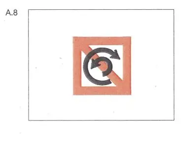
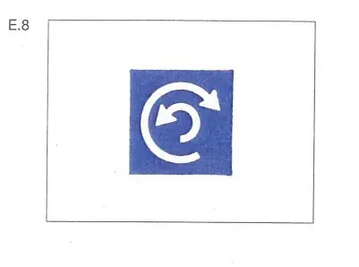

§ 6.13 Wenden
Rheinschiffahrtspolizeiverordnung
1. | Fahrzeuge dürfen nur wenden, nachdem sie sich vergewissert haben, daß der übrige Verkehr unter Berücksichtigung der nachstehenden Nummern 2 und 3 dies ohne Gefahr zuläßt und andere Fahrzeuge nicht gezwungen werden, unvermittelt ihren Kurs oder ihre Geschwindigkeit zu ändern. | |
2. | Sofern das beabsichtigte Manöver andere Fahrzeuge dazu zwingt oder zwingen kann, von ihrem Kurs abzuweichen oder ihre Geschwindigkeit zu ändern, muß das Fahrzeug, das wenden will, seine Absicht rechtzeitig wie folgt ankündigen: | |
a) | durch "einen langen Ton, einen kurzen Ton", wenn es über Steuerbord wenden will, | |
b) | durch "einen langen Ton, zwei kurze Töne", wenn es über Backbord wenden will. | |
3. | Die anderen Fahrzeuge müssen daraufhin, sofern dies nötig und möglich ist, ihre Geschwindigkeit und ihren Kurs ändern, damit das Wenden ohne Gefahr geschehen kann. | |
4. | Auf den durch das Tafelzeichen A.8 (Anlage 7) gekennzeichneten Strecken ist das Wenden verboten. |  |
Sind hingegen Strecken durch das Tafelzeichen E.8 (Anlage 7) gekennzeichnet, so wird dem Schiffsführer empfohlen, dort zu wenden, wobei dieser Paragraph zu beachten ist. |  |